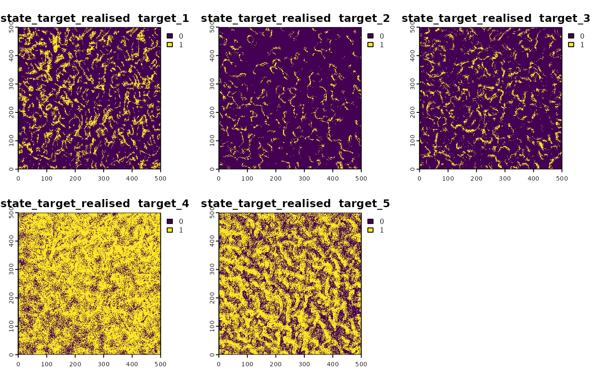
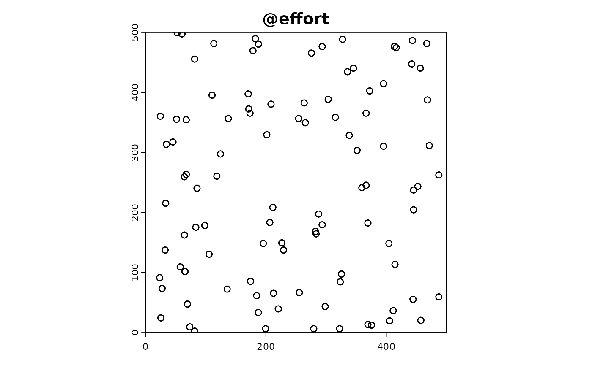
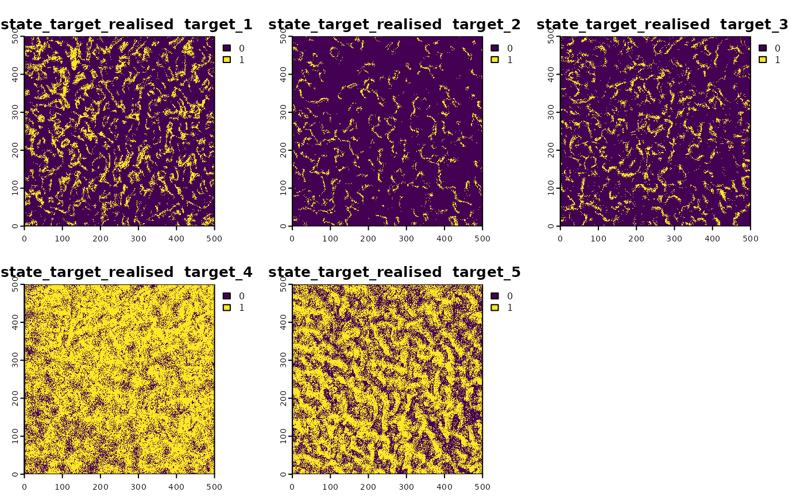
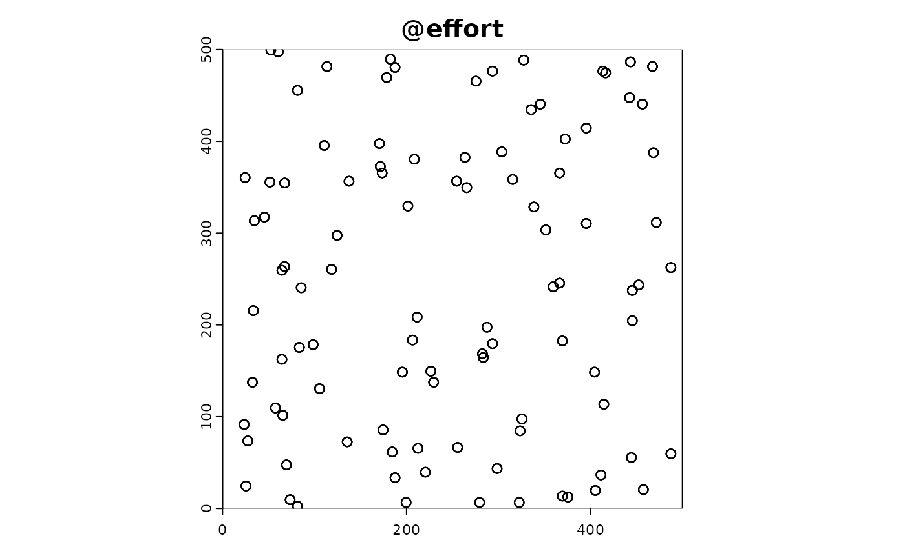
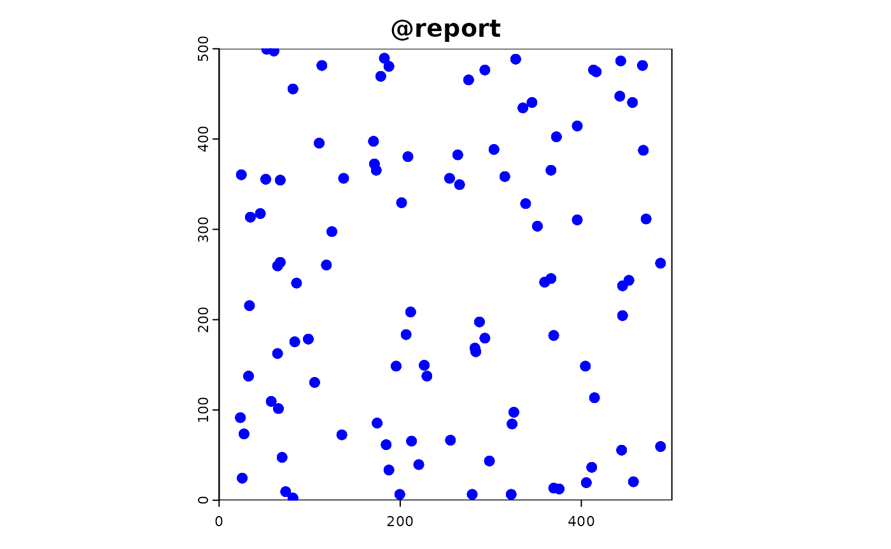
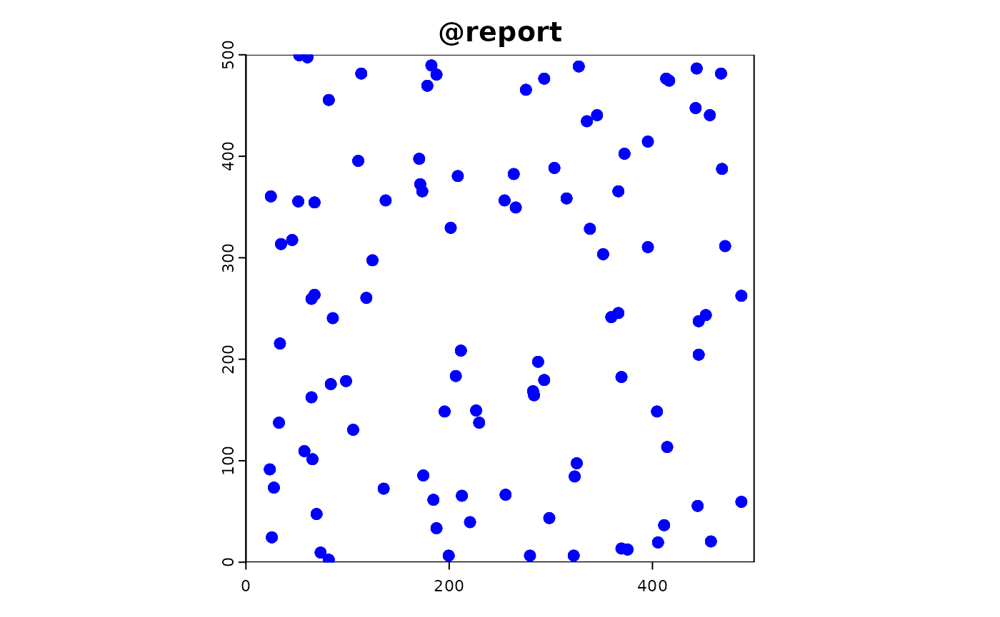

More complex simulations
custom_functions.RmdIntroduction
This vignette demonstrates a simulation workflow to investigate the benefits and issues of co-locating recording sites for different taxonomic groups, such as butterflies, plants, and birds. We will generate species counts/abundance data across multiple sites, simulate dependencies between species, and incorporate temporal trends. This approach helps assess whether using the same recording sites across different taxa groups is beneficial or problematic and explore optimal strategies for site co-location.
Setup
First, we load the required packages and set a seed for reproducibility.
library(STRIDER)
library(terra)
#> terra 1.7.78
library(sf)
#> Linking to GEOS 3.10.2, GDAL 3.4.1, PROJ 8.2.1; sf_use_s2() is TRUE
library(dplyr)
#>
#> Attaching package: 'dplyr'
#> The following objects are masked from 'package:terra':
#>
#> intersect, union
#> The following objects are masked from 'package:stats':
#>
#> filter, lag
#> The following objects are masked from 'package:base':
#>
#> intersect, setdiff, setequal, union
library(ggplot2)
set.seed(42)Custom Environmental State
We define custom environmental variables with different spatial patterns to simulate realistic scenarios.
dim_x <- 500
dim_y <- 500
# Define environmental variables with different spatial patterns
env1 <- terra::rast(matrix(rep(seq(from = 1, to = dim_x), times = dim_y), dim_x, dim_y))
env1 <- env1 / max(values(env1))
env2 <- terra::rast(matrix(rep(seq(from = dim_x, to = 1), each = dim_y), dim_x, dim_y))
env2 <- env2 / max(values(env2))
env3 <- terra::rast(matrix(runif(dim_x * dim_y), dim_x, dim_y))
env3 <- env3 / max(values(env3))
env4 <- terra::rast(matrix(sin(seq(0, pi, length.out = dim_x)), dim_x, dim_y))
env4 <- env4 / max(values(env4))
env5 <- terra::rast(matrix(cos(seq(0, pi, length.out = dim_y)), dim_x, dim_y))
env5 <- env5 / max(values(env5))
custom_env <- c(env1, env2, env3, env4, env5)
names(custom_env) <- c("rainfall", "temperature", "urban_density", "elevation", "aspect")Next, we integrate these custom environmental variables into the simulation object.
background <- terra::rast(matrix(0, dim_x, dim_y))
sim_obj <- SimulationObject(background = background)
sim_obj <- sim_state_env(sim_obj, spatraster = custom_env)Custom Suitability Functions for Multiple Species
We define custom suitability functions for multiple species, each influenced differently by the environmental variables.
# Custom suitability function for multiple species
custom_suitability_function <- function(simulation_object) {
# Extract environmental variables from the simulation object
env <- simulation_object@state_env
# Define the suitability functions for multiple species
species_suitability_functions <- list(
butterfly = function(env) (env$rainfall * env$temperature + env$urban_density^2) / 3,
plant = function(env) (env$rainfall + env$temperature^2 - env$urban_density) / 3,
bird = function(env) (env$rainfall + env$elevation + env$aspect) / 3,
mammal = function(env) (env$temperature * env$elevation - env$urban_density) / 3,
amphibian = function(env) (env$rainfall + env$elevation^2 - env$aspect) / 3
)
# Initialize an empty list to store the suitability layers
suitability_layers <- list()
# Loop through each species and calculate its suitability layer
for (species in names(species_suitability_functions)) {
suitability <- species_suitability_functions[[species]](env)
suitability[suitability<0] <- 0
suitability[suitability>1] <- 1
names(suitability) <- species
suitability_layers[[species]] <- suitability
}
# Combine all suitability layers into a single SpatRaster object
suitability_raster <- rast(suitability_layers)
return(suitability_raster)
}
sim_obj <- sim_state_target_suitability(sim_obj, fun = custom_suitability_function)Realised suitability
sim_obj <- sim_state_target_realise(sim_obj,fun="binomial")Custom Effort Function
We create a custom effort function that simulates sampling effort using a combination of urban density and random sampling.
custom_effort_function <- function(sim_obj, n_sites, n_taxa_per_site = 1) {
sites <- sample(cells(sim_obj@background), n_sites, replace = TRUE)
coords <- xyFromCell(sim_obj@background, sites)
effort_df <- data.frame(
x = coords[, 1],
y = coords[, 2]
)
effort_sf <- st_as_sf(effort_df, coords = c("x", "y"))
site_taxa_combination <- expand.grid(sites = 1:n_sites,target = names(sim_obj@state_target_suitability))
effort_sf$taxa <- sample(names(sim_obj@state_target_suitability), n_taxa_per_site)
return(effort_sf)
}
sim_obj <- sim_effort(sim_obj, fun = custom_effort_function, n_sites = 100)Custom Detection and Reporting Functions
We could define custom detection and reporting functions to introduce variability in the detection and reporting probabilities, but just use the default for now.
# Simulate the detection
sim_obj <- sim_detect(sim_obj,fun = "equal", prob = 0.5)
# Simulate the reporting
sim_obj <- sim_report(sim_obj,fun = "equal", prob = 0.8, platform = "iRecord")
 
 
